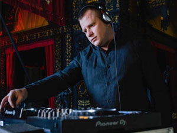
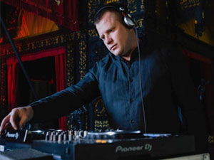
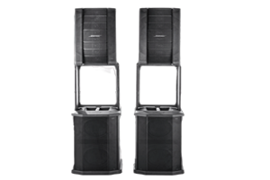
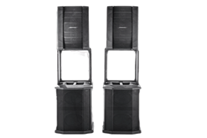
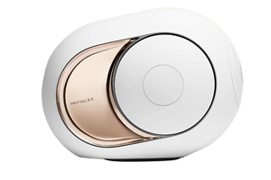
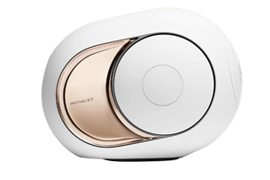
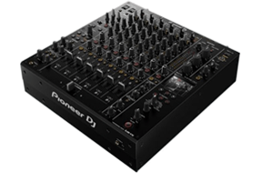
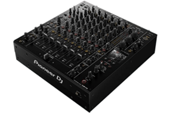
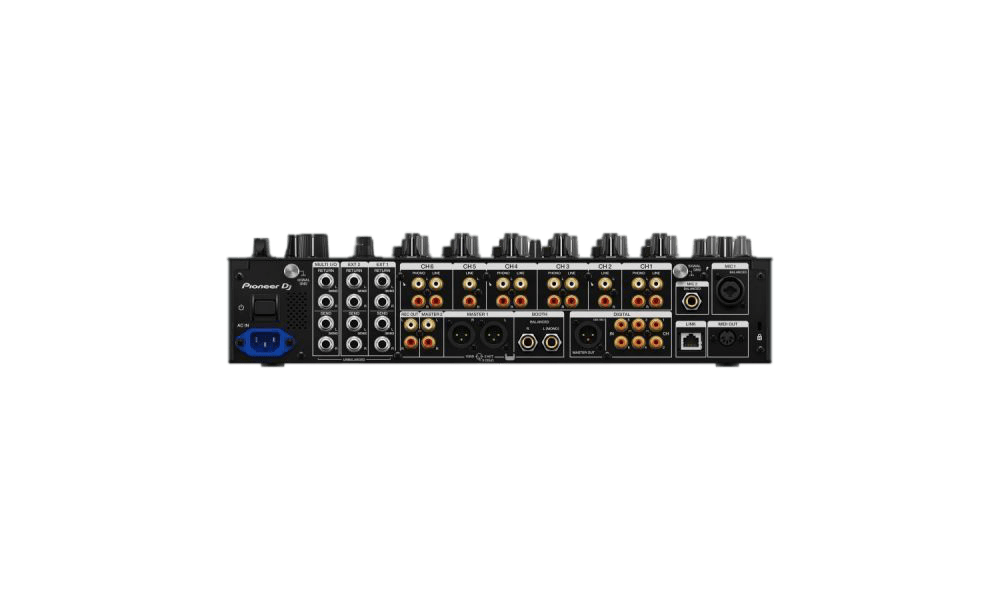
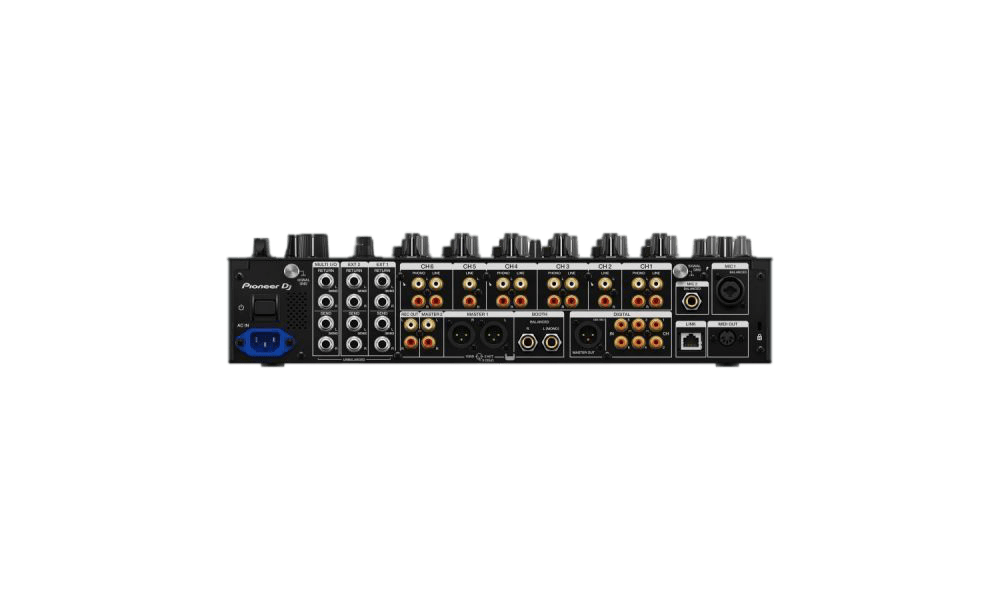

SOUND·LIGHT·EVENTS
+34 603 62 14 19Оренда звуку
Ordenar


BRONZE

SILVER

GOLD

PLATINUM

DIAMOND

BIG BOSS
* У цій категорії ви можете ознайомитися з пропозицією по оренді комплектів обладнання. Комплекти складені виходячи з бюджету і розміру заходу, але не обмежуються в позиціях. Наші менеджери допоможуть вам у підборі обладнання виходячи з ваших побажань і переваг.

Оренда звукового та світлового обладнання найкраще рішення, якщо ви плануєте захід, на якому виступатимуть артисти та музиканти. Кожен клієнт може розраховувати на те, що фахівці не тільки доставлять техніку, але й розставлять її та підключать.
Ми допоможемо підібрати оптимальний варіант для будь-якого заходу, від невеликої дружньої вечірки, ювілею до гала-концерту, фестивалю. Переваги оренди звуку та світла в тому, що Вам не доведеться самостійно підбирати необхідну апаратуру, та нешукати фахівців, які зможуть підключити її.
Треба лише пояснити менеджерам, для якої події потрібний прокат техніки, а наші профі підберуть оптимальне рішення, від мікрофонів, пультів, мікшера, до підсилювачів і акустичних систем...
Докладніше...Якісна музика – невід'ємна частина будь-якого свята. Навіть для невеликих заходів та презентацій необхідне професійне звукове обладнання. Це пов'язано з тим, що нікому не сподобається звук несправного обладнання чи гуркіт, який може зіпсувати загальне враження навіть від грандіозного заходу. Швидко та якісно підготуйтеся до майбутньої події. Ми надаємо в оренду найновіше звукове HIGH-END обладнання в Марбельї та на всьому узбережжі Коста-дель-Соль, гарантуючи, що ваш захід пройде голосно, з чіткими мелодіями та голосами. Ми спеціалізуємося на технічному забезпеченні заходів, і оренда звуку одна з наших спеціалізацій. Коли наші фахівці прибувають на місце, вони привозять все необхідне обладнання та швидко встановлюють його та готують до роботи. З нашою допомогою ви зможете створити яскраву, енергійну та святкову атмосферу для вашої вечірки, яка запам'ятається всім учасникам!
 



Бездротова вокальна мікрофонна система BLX24E/B58 із переносним футляром. ВОКАЛЬНИЙ МІКРОФОН BETA 58A Частота адаптована до вокалу, з яскравими середніми і басовими тонами для контролю наближення. Неодимовий магніт для високого рівня сигналу/шуму Решітка із загартованої сталі, стійка до зношування та неправильного поводження Удосконалена система кріплення з пневматичним амортизатором, що зводить до мінімуму передачу механічного шуму та вібрації Мінімально піддається впливу змінного імпедансу навантаження Легендарна якість та надійність Shure ПЕРЕДАТЧИК BLX2 Світлодіод для стану живлення та стану батареї Регульоване регулювання посилення Швидкий та простий пошук частоти Батарейки типу . Робочий діапазон 100 м (300 футів) (видимість) приймач BLX4 До 12 сумісних систем (залежно від регіону) Різні внутрішні антени з мікропроцесорним керуванням QuickScan в один дотик визначає найкращу частоту відкриття Аудіовиходи ¼" і XLR Двоколірний світлодіодний артикул: 95D16526 Поворотний адаптер, номер деталі: 90F4046 Джерело живлення PS23E Різьбовий адаптер: 31B1856
Замовити 



Гучномовець Bose F1 Model 812 – це перший портативний гучномовець з автономним живленням, який дозволяє керувати діаграмою спрямованості по вертикалі. Незалежно від того, в якій кімнаті ви перебуваєте, у вас буде адекватне покриття. Основна акустична система для груп, ді-джеїв та заходів. Повний діапазон 1000 Вт. Гнучке управління по вертикалі з охопленням 100 º по горизонталі. Його гнучкий набір дозволяє вибирати між 4 шаблонами покриття. Один 12-дюймовий низькочастотний динамік та вісім 2,25-дюймових драйверів. Технологія FLEX Array Гнучка конструкція перегородки, яку можна налаштувати чотирма унікальними способами, щоб вибрати найкращу схему покриття для програми. Лінійний масив середніх/високих частот із 8 вертикально орієнтованими драйверами. Кожен драйвер встановлений на спеціальному 100-градусному хвилеводі, який забезпечує широке та стабільне покриття. Високопродуктивний 12-дюймовий НЧ- драйвер забезпечує потужне відтворення низьких частот. Конструкція з подвійним посиленням та двома високопродуктивними підсилювачами класу D для окремого живлення 12-дюймового драйвера масиву LF FLEX. 2 вхідні канали з незалежними регуляторами гучності та перемикачем лінійного рівня/мікрофона на каналі 1. Кріплення на стовп 35 мм. Розміри 665 х 334 х 372 мм. Вага 20,2 кг. 2Х BOSE F1 САБВУФЕР Сабвуфер Bose F1 пропонує всі функції більшого басового корпусу, але в компактному корпусі, тому його легко транспортувати. Сабвуфер F1 потужністю 1000 Вт використовує два 10-дюймові драйвери з високим ходом для забезпечення високоякісного звуку та глибоких, пробивних басів. Цей сабвуфер включає вбудований монтажний кронштейн, призначений для встановлення гучномовця F1 812 з гнучкою матрицею, що робить установку швидкою та легкою, а кабельні канали забезпечують чистоту та професіоналізм установки. Інноваційний перемикач полярності дозволяє регулювати полярність сабвуфера, вибираючи між NORM та REV, а інверсія полярності дозволяє легко виправити перекриття низьких частот. Це ідеальна система для будь-якої групи, сольних музикантів, ді-джеїв, закладів гостинності та багато іншого. Характеристики: Тип системи: автономна Потужність системи: 1000 Вт Драйвери: 2 x 10- дюймові високоходові драйвери Частотна характеристика: 48 Гц - 100 Гц Діапазон частот: 38 Гц - 115 Гц (-10 дБ) Номінальна дисперсія: всеспрямована Максимальний рівень звукового тиску на відстані 1 м: 132 дБ SPL (пік) Частота до4 100 Гц 100 Гц фільтр Баттерворт 4- го порядку на лінійному виході Спотворення при номінальній потужності: макс. 0,1% (30 Гц - 154 кГц) Системний обмежувач: динамічний обмежувач Індикатор живлення: Синій світлодіод: система включена Сигнальні індикатори: Живлення/Несправність Обмеження передній світлодіод сигнальний вхід Вхідні з'єднання: 2 x XLR — 1/4'' Combo Елементи керування: рівень гучності Вибір функції та вимкнути Вибір за . Грати: перфоровані сталеві грати з покриттям Розміри: 688 х 410,16 х 448,5 мм (В х Ш х Г) Вага нетто: 24,9 кг. Замовити


Pioneer XDJ-XZ це DJ-система «все в одному» для rekordbox та Serato DJ Pro. Універсальний юніт оснащений широким спектром функцій, міцним та надійним шасі, а також відчуттям від використання супер популярних лінійок професійних програвачів та мікшерів виробника CDJ та DJM. Підтримка медіа Ви можете вибрати, чи хочете ви використовувати пристрої USB, підключити свій ноутбук і керувати rekordbox DJ, або використовувати режим Link Export для безпосереднього відтворення треків із бібліотеки rekordbox. В іншому випадку є бонус підключення зовнішніх джерел, таких як програвачі, семплери, CDJ або смартфони, до 3-го та 4-го каналу, а Pro DJ link дозволяє переглядати та вибирати треки з CDJ. Робота з дисплеями Модель може похвалитися 7-дюймовим РК-дисплеєм, що показує оперативну інформацію. Є два повнорозмірні джоги, в центрі кожного з яких знаходиться On Jog Display. Кольоровий екран відображає важливу інформацію, таку як форми хвилі, BPM, мітки швидкого доступу та багато іншого. Вся ця доступна візуальна інформація означає, що ви можете зосередитись на виступі, а не дивитися на ноутбук. Повнорозмірні джоги ідеально підходять для змішування та дають відчуття скретча. Комутація та керування Пристрій заповнений різними елементами керування, зі знайомим компонуванням NXS2. Ви можете мікшувати з 4 каналами та використовувати 14 Beat FX та 6 Sound Color FX, щоб додати жвавості та емоцій своїм виступам. Також є 16 різнокольорових педів (по вісім на кожній деці), три входи USB (два на верхній панелі та одне на задній для підключення ноутбука) ідеально підходять для плавних переходів, 2 лінійні входи RCA, 2 входи Phono RCA, 1 вхід AUX RCA та 2 мікрофонних XLR та 1/4-дюймових роз'ємів TRS. Крім того, є 2 виходи Master XLR і RCA, 1 1/4-дюймовий вихід TRS, 2 1/4-дюймові стереофонічні роз'єми для навушників, 3,5-мм стереофонічний міні-роз'єм для навушників і 1 1/4 Send-вихід TS. Звучання Юніт виробляє фантастичне, ясне та високоякісне аудіо завдяки розширеним функціям системи та можливості адаптації до середовища, в якому ви граєте. Ви можете точно налаштувати свій мікс, використовуючи 3-смуговий еквалайзер на Master виході. Ви також знайдете 3-смуговий еквалайзер на кожному з мікрофонних входів для виключного контролю. Крім того, є функція придушення зворотний зв'язок, якщо він виникне через мікрофонів. All-in-one юніт Pioneer XDJ-XZ - це перша у своєму роді DJ-система "все в одному". Це функція, яка дозволяє бездоганно синхронізувати зовнішнє обладнання, а потім синхронізувати звук із мікшуванням. Ви також можете переглядати доріжки на USB-пристрої з будь-якого з підключених пристроїв. Софт та керування У комплект входить rekordbox і він повністю готовий до роботи з Serato DJ Pro після очікуваного оновлення прошивки на початку 2020 року. Надійна, міцна та високоякісна DJ-система, безперечно, добре оснащена. Вона ідеальна для різних місць та локацій, клубів чи заходів, або навіть для серця домашньої студії. Plug and play Завдяки функції plug and play девайс готовий до роботи. Просто переконайтеся, що ви оновили до останньої версії rekordbox DJ, та активуйте ліцензійний ключ, який постачається із системою. Також варто згадати, що він підтримує rekordbox DVS, ліцензію на який можна придбати окремо. Те саме стосується Serato DVS після згаданого оновлення. Характеристики: Частотний діапазон: 20 – 20000 Гц.
Замовити
 



Devialet Phantom I 108 dB – це високоякісна акустична система з підтримкою Bluetooth, Spotify та Airplay2. Devialet Phantom I 108dB розроблений з використанням передових технологій для іммерсивного та музичного звучання. Примарний діапазон До лінійки Devialet Phantom I входять дві моделі: 103 дБ та 108 дБ. Вони відрізняються потужністю та рівнем звукового тиску. Вони ідеально підходять для основних лівого та правого динаміків або якщо вам потрібно більше, щоб заповнити великі кімнати. Подвійне збільшення для стерео Devialet Phantom I 108dB може бути з'єднане з іншим або декількома, для ще більшого звукового розширення та мультирумної системи. З додаванням в мікс ще одного динаміка, ваш звук набуває нового виміру. Програма Devialet Програма Devialet, доступна для Android та Apple iOS, може синхронізувати всю вашу систему Devialet разом, щоб слухати як одне ціле, а також мати можливість незалежно відтворювати звук у кожній кімнаті. Програма Devialet також дозволяє настроювати динаміки, редагувати налаштування, бути в курсі останніх подій та регулювати затримку серед інших елементів керування. Можливості потокової передачі Phantom I 108dB від Devialet має вбудований Bluetooth, щоб ви могли з'єднати свій телефон, планшет чи ноутбук, щоб ви могли передавати аудіо бездротовою мережею. Він підтримує потокові програми, щоб зробити цей процес плавним, наприклад Apple AirPlay 2, Spotify Connect та Roon Ready. Devialet Technology Phantom I 108dB від Devialet включає багато передових запатентованих технологій Devialet, що забезпечують точний і потужний звук. Замовити


Pioneer CDJ-3000 - професійний DJ-програвач з сенсорним екраном 9" і можливістю роботи з iPhone, новий флагман лінійки CDJ. CDJ-3000 оснащений блоком MPU з потужними можливостями обробки. Обробка внутрішнього аудіо в CDJ-3000 підвищена до 96 кГц / 32 біт і може використовуватись з усіма аудіоформатами. Оновлена технологія також включає нову функцію Key Shift, відтворення зі змінною швидкістю та керування загальним темпом. Великий 9-дюймовий сенсорний екран полегшує перегляд вашої бібліотеки та управління. Кнопки Playlist та Search розташовані над екраном для швидкого доступу до списків відтворення та зручного перегляду вашої бібліотеки. Тепер під екраном знаходяться 8 кнопок швидкого доступу. Також варто зазначити, що новий CDJ-3000 не має приводу для компакт-дисків. Ви можете підключити свій ноутбук і безпосередньо відтворювати свою бібліотеку rekordbox, відтворювати музику з USB або SD-карти або - якщо ви використовуєте останню версію rekordbox - навіть підключити свій iPhone до CDJ-3000 через USB кабель та мікшувати треки прямо з телефону. Pioneer DJM-V10 – 6-канальний професійний DJ мікшер нового типу з унікальними характеристиками. Мікшер пропонує безпрецедентну якість 96-кГц/64-біт, цифрову обробку в DSP, а також високоякісні 32-бітові аналого-цифрові та цифро- аналогові перетворювачі та синхронізатор з низьким джиттером. 6 каналів з різними типами входів допоможуть створити ідеальний сетап та підключити будь-яке обладнання, від CDJ та вертушок до семплерів, синтезаторів та драм-машин. Мікшер оснащений новим 4-смуговим еквалайзером. Вбудований компресор дозволяє настроїти гучність треків. Розширена секція Send-Return дозволяє додавати зовнішні ефекти FX або комбінувати їх із вбудованими FX. 3-смуговий майстер ізолятор з новою функцією посилення/обрізання кривих та налаштуванням частот кросовера та інших параметрів, дозволяє з легкістю керувати тональністю всього міксу. Два виходи для навушників та еквалайзера дозволять двом діджеям зручно здійснювати моніторинг. Фіксація шнура живлення забезпечує надійність підключення, запобігає його випадковому відключенню від мережі. Запишіть та заархівуйте свої мікси через iPhone або iPad, завантажте з хмарного сервісу або з легкістю здійснюйте пряму трансляцію своїх сесій.
Замовити 



Pioneer DJM-V10 – 6-канальний професійний DJ мікшер нового типу з унікальними характеристиками. Мікшер пропонує безпрецедентну якість 96-кГц/64-біт, цифрову обробку в DSP, а також високоякісні 32-бітові аналого-цифрові та цифро-аналогові перетворювачі та синхронізатор із низьким джиттером. 6 каналів з різними типами входів допоможуть створити ідеальний сетап та підключити будь-яке обладнання, від CDJ та вертушок до семплерів, синтезаторів та драм-машин. Мікшер оснащений новим 4-смуговим еквалайзером. Вбудований компресор дозволяє настроїти гучність треків. Розширена секція Send- Return дозволяє додавати зовнішні ефекти FX або комбінувати їх із вбудованими FX. 3-смуговий майстер ізолятор з новою функцією посилення/обрізання кривих та налаштуванням частот кросовера та інших параметрів, дозволяє з легкістю керувати тональністю всього міксу. Два виходи для навушників та еквалайзера дозволять двом діджеям зручно здійснювати моніторинг. Фіксація шнура живлення забезпечує надійність підключення, запобігає його випадковому відключенню від мережі. Запишіть та заархівуйте свої мікси через iPhone або iPad, завантажте з хмарного сервісу або з легкістю здійснюйте пряму трансляцію своїх сесій. Також доступна функція DVS з низькою затримкою, що дозволяє керувати та скретчити з CDJ або вертушок за допомогою rekordbox, Serato DVS (ліцензія на Serato DJ Club Kit продається окремо, скоро буде сумісна з Serato DJ Pro або TRAKTOR PRO 3 (продається окремо). Крім того, DJM-V10 підтримує розширений протокол PRO DJ LINK ShowKontrol, який дозволяє використовувати всю основну інформацію з DJM-V10, налаштовувати звук та відео для створення шоу. Характеристики: Тип: DJ мікшер Кількість каналів: 6 Частотні характеристики: 20 - 40 000 Гц Частота дискретизації: 96 кГц АЦП/ЦАП: 32 біт Співвідношення сигнал/шум: 105 дБ Кросфейдер: Magvel фейдер Входи: 4 PHO Return, LAN х 1, USB х 2 USB У порту, 1 USB A порт Виходи: 2 MASTER (XLR, RCA), 1 BOOTH (1/4 дюймовий TRS джек), 4 HEADPHONE MONITOR (кожна секція: 1/4 дюймовий роз'єм, 1/8"), 1 REC (RCA), 1 цифровий (AES/EBU), 1 MIDI (DIN) MIDI керування: повністю призначені елементи керування MIDI Сумісність з DVS: rekordbox, Serato DJ Pro, TRAKTOR PRO 3 Розміри: 437,6 х 107,9 х 467 мм Вага: 11,9 кг.
Замовити


Програвач Technics SL-1210 MK7 є новою доробкою моделі, що стала дуже популярною у меломанів та ді-джеїв. У моделі Technics SL-1210 MK7, зрозуміло, було збережено основний принцип конструкції - прямий привід від двигуна з великим пусковим моментом. Прямий привід забезпечує стабільну та точну підтримку швидкості обертання пластинки, а також можливість її плавного регулювання та ручного підгальмовування (останні дві обставини і роблять програвач таким бажаним для професіоналів). У моделі Technics SL-1210 MK7 двигун був доопрацьований, що ще більше покращило його параметри та підвищило надійність та стабільність роботи. Technics SL- 1210 MK7 оснащений статично збалансованим S-подібним тонармом, що також є класичним для програвачів компанії. Завдяки високій точності виготовлення та продуманої конструкції тонарм забезпечує чудовий трекінг та якісне звучання навіть на пластинках з неідеальною поверхнею. Technics SL- 1210 MK7 оснащений масивним нерезонуючим шасі з литого алюмінію та ABS-плити в нижній частині, яке встановлено на комбінованих демпфованих опорах – вони мають гумову оболонку та внутрішню пружину. При цьому опори мають регулювання висотою, що дозволяє виставити Technics SL-1210 MK7 точно по горизонталі навіть на нерівних поверхнях. Опорний диск у програвачі також алюмінієвий і покритий зверху гумою, яка демпфує його, а також служить килимком для платівки. Колір підсвічування стробоскопа та органів управління в програвачі можна змінювати за допомогою мікроперемикача. У моделі Technics SL-1210 MK7 встановлена цифрова схема пітч- контролю (плавної зміни швидкості обертання диска), що працює в діапазоні ± 8 або 16%, що підвищує точність регулювання. Technics SL-1210 MK7 оснащений електронним перемикачем швидкості 33, 45 або 78 об/хв. Також тут є і зручне підсвічування Target Light, яке було вперше застосовано в моделі SL-1210 MK2. Використання для освітлення яскравого світлодіода з білим світлом робить програвач зручним у використанні навіть у темних приміщеннях.
Замовити

Завдяки невеликій вазі та можливості прослуховування одним вухом, HD 25 Plus є незамінними моніторними навушниками. Закриті HD 25 Plus - це спеціально розроблені професійні навушники для моніторингу, що забезпечують високий рівень ослаблення навколишнього шуму. Ці навушники здатні працювати при високому рівні звукового тиску та мають надзвичайно міцну конструкцію. Вони винятково хороші для роботи в умовах підвищеного шуму, наприклад, при зборі новин, звукопідсиленні, студійному моніторингу та тестуванні аудіо обладнання. Ідеально підходять для кінооператорів та ді-джеїв - це справжні професійні навушники. Характеристики Тип пристрою дротяні навушники Конструкція накладні Технологія динамічні Мінімальна частота, що відтворюється 16 Гц Максимальна частота, що відтворюється 22000 Гц Імпеданс 70 Ом Чутливість 120 дБ Параметри чутливості дБ/В Максимальна потужність 200 мВт Коефіцієнт. 3%
Замовити
Міцний кронштейн із подвійною рамою X-типу забезпечує додаткову стійкість для важких та легких цифрових електронних клавішних інструментів. Швидкознімний механізм цієї підставки дозволяє користувачеві регулювати висоту від 10 до 98 см; порівняно з більшістю інших кріплень, що допускають лише п'ять встановлених положень. Складання не потрібно; металеві частини цієї підставки для клавіатури зварені разом і немає жодних гвинтів, які можна втратити. Міцні ремені, що підтримують, прикріплені до підставки для клавіатури, захищають клавіатуру від зміщення під час виконання. Нековзкі гумові ніжки надають цій підставці додаткову стійкість.
Замовити
 

Pioneer CDJ-3000 - професійний DJ-програвач з сенсорним екраном 9" і можливістю роботи з iPhone, новий флагман лінійки CDJ. CDJ-3000 оснащений блоком MPU з потужними можливостями обробки. Обробка внутрішнього аудіо в CDJ-3000 підвищена до 96 кГц / 32 біт і може використовуватись з усіма аудіоформатами. Оновлена технологія також включає нову функцію Key Shift, відтворення зі змінною швидкістю та керування загальним темпом. Великий 9-дюймовий сенсорний екран полегшує перегляд вашої бібліотеки та управління. Кнопки Playlist та Search розташовані над екраном для швидкого доступу до списків відтворення та зручного перегляду вашої бібліотеки. Тепер під екраном знаходяться 8 кнопок швидкого доступу. Також варто зазначити, що новий CDJ-3000 не має приводу для компакт-дисків. Ви можете підключити свій ноутбук і безпосередньо відтворювати свою бібліотеку rekordbox, відтворювати музику з USB або SD-карти або - якщо ви використовуєте останню версію rekordbox - навіть підключити свій iPhone до CDJ-3000 через USB кабель та мікшувати треки прямо з телефону. Pioneer DJM-V10 – 6-канальний професійний DJ мікшер нового типу з унікальними характеристиками. Мікшер пропонує безпрецедентну якість 96-кГц/64-біт, цифрову обробку в DSP, а також високоякісні 32-бітові аналого-цифрові та цифро- аналогові перетворювачі та синхронізатор з низьким джиттером. 6 каналів з різними типами входів допоможуть створити ідеальний сетап та підключити будь-яке обладнання, від CDJ та вертушок до семплерів, синтезаторів та драм-машин. Мікшер оснащений новим 4-смуговим еквалайзером. Вбудований компресор дозволяє настроїти гучність треків. Розширена секція Send-Return дозволяє додавати зовнішні ефекти FX або комбінувати їх із вбудованими FX. 3-смуговий майстер ізолятор з новою функцією посилення/обрізання кривих та налаштуванням частот кросовера та інших параметрів, дозволяє з легкістю керувати тональністю всього міксу. Два виходи для навушників та еквалайзера дозволять двом діджеям зручно здійснювати моніторинг. Фіксація шнура живлення забезпечує надійність підключення, запобігає його випадковому відключенню від мережі. Запишіть та заархівуйте свої мікси через iPhone або iPad, завантажте з хмарного сервісу або з легкістю здійснюйте пряму трансляцію своїх сесій. Pioneer DJM-V10 – 6-канальний професійний DJ мікшер нового типу з унікальними характеристиками. Мікшер пропонує безпрецедентну якість 96-кГц/64-біт, цифрову обробку в DSP, а також високоякісні 32-бітові аналого-цифрові та цифро- аналогові перетворювачі та синхронізатор з низьким джиттером. 6 каналів з різними типами входів допоможуть створити ідеальний сетап та підключити будь-яке обладнання, від CDJ та вертушок до семплерів, синтезаторів та драм-машин. Мікшер оснащений новим 4-смуговим еквалайзером. Вбудований компресор дозволяє настроїти гучність треків. Розширена секція Send-Return дозволяє додавати зовнішні ефекти FX або комбінувати їх із вбудованими FX. 3-смуговий майстер ізолятор з новою функцією посилення/обрізання кривих та налаштуванням частот кросовера та інших параметрів, дозволяє з легкістю керувати тональністю всього міксу. Два виходи для навушників та еквалайзера дозволять двом діджеям зручно здійснювати моніторинг. Фіксація шнура живлення забезпечує надійність підключення, запобігає його випадковому відключенню від мережі. Запишіть та заархівуйте свої мікси через iPhone або iPad, завантажте з хмарного сервісу або з легкістю здійснюйте пряму трансляцію своїх сесій. Також доступна функція DVS з низькою затримкою, що дозволяє керувати та скретчити з CDJ або вертушок за допомогою rekordbox, Serato DVS (ліцензія на Serato DJ Club Kit продається окремо, скоро буде сумісна з Serato DJ Pro або TRAKTOR PRO 3 (продається окремо). Крім того, DJM-V10 підтримує розширений протокол PRO DJ LINK ShowKontrol, який дозволяє використовувати всю основну інформацію з DJM-V10, налаштовувати звук та відео для створення шоу. Характеристики: Тип: DJ мікшер Кількість каналів: 6 Частотні характеристики: 20 - 40 000 Гц Частота дискретизації: 96 кГц АЦП/ЦАП: 32 біт Співвідношення сигнал/шум: 105 дБ Кросфейдер: Magvel фейдер Входи: 4 PHO Return, LAN х 1, USB х 2 USB У порту, 1 USB A порт Виходи: 2 MASTER (XLR, RCA), 1 BOOTH (1/4 дюймовий TRS джек), 4 HEADPHONE MONITOR (кожна секція: 1/4 дюймовий роз'єм, 1/8"), 1 REC (RCA), 1 цифровий (AES/EBU), 1 MIDI (DIN) MIDI керування: повністю призначені елементи керування MIDI Сумісність з DVS: rekordbox, Serato DJ Pro, TRAKTOR PRO 3 Розміри: 437,6 х 107,9 х 467 мм Вага: 11,9 кг
Замовити